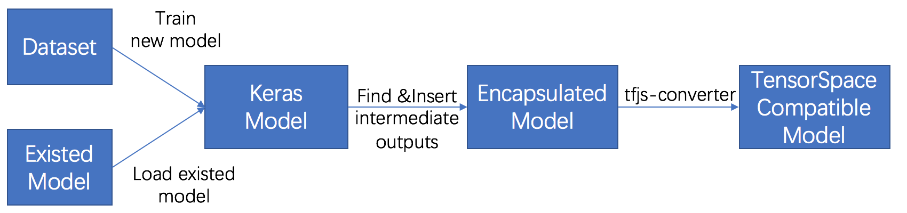
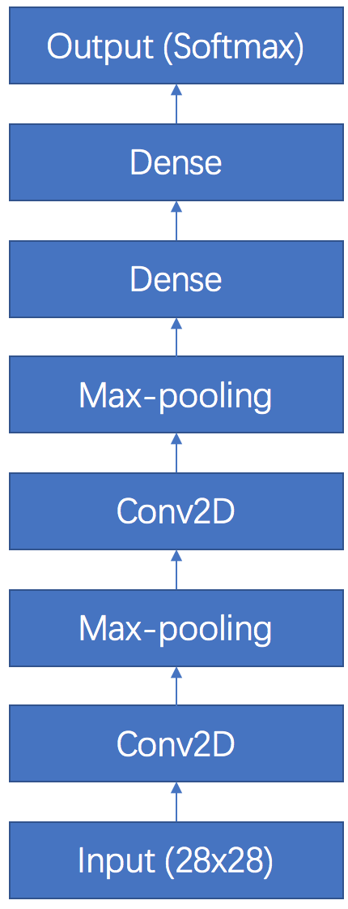
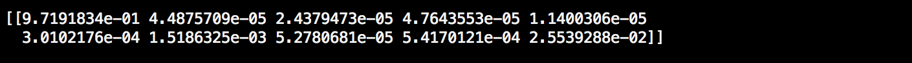
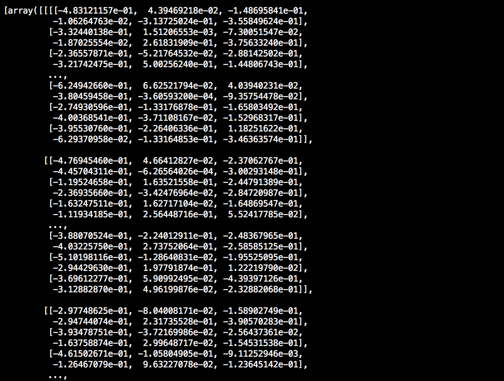
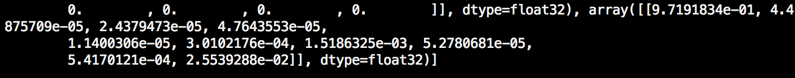

In this chapter, we will introduce how to preprocess a Keras model to adapt the multiple intermediate
layer outputs for applying TensorSpace. If you have read the
tf.keras preprocessing tutorial
, since the close relations between the two APIs, the workflows are very similar.
The sample files that are used for the tutorial are listed below:
filter_center_focus
keras_model.py
filter_center_focus
convert_keras.sh
filter_center_focus
all model files
For the tutorial, we use Python 3.6.5 and the following libraries:
import tensorflow as tf
import numpy as np
from keras.models import Sequential, Model
from keras.layers import Dense, Input, InputLayer, Conv2D, MaxPooling2D, Reshape, Flatten
from keras.models import load_model
wb_sunnyNote:
filter_center_focus
The core libraries
are keras and numpy.
filter_center_focus
tf.keras is used to provide dataset only.
It is also required to install tfjs-converter (a
useful tool from TensorFlow.js):
$ pip install tensorflowjs
If you are new on training a ML model by Keras, we highly recommand you to read the
guide from
Keras first.
To preprocess a Keras model, we have the following steps:

Fig. 1 - Steps to preprocess a Keras model
filter_center_focus
1. Train/Load model
filter_center_focus
2. Insert multiple intermediate outputs
filter_center_focus
3. Save encapsulated model
filter_center_focus
4. Convert to TensorSpace compatible model
In the tutorial, we try to preprocess a Keras model of LeNet with MNIST dataset as an example.
1 Train/Load Model
1.1 Train a new model
If you don't have your model trained yet or not sure how to generate a proper model for TensorSpace from a
scratch, let's train a model together~
By following the structure of the LeNet,

Fig. 2 - LeNet structure
We can generate a LeNet model as the following:
def create_sequential_model():
single_output_model = Sequential([
InputLayer(input_shape=(28, 28)),
Reshape((28,28,1),input_shape=(28,28,)),
Conv2D(filters=6, kernel_size=5, strides=1, input_shape=(28, 28, 1), name="Conv2D_1"),
MaxPooling2D(pool_size=(2, 2), strides=(2, 2), name="MaxPooling2D_1"),
Conv2D(filters=16, kernel_size=5, strides=1, name="Conv2D_2"),
MaxPooling2D(pool_size=(2, 2), strides=(2, 2), name="MaxPooling2D_2"),
Flatten(),
Dense(120, activation="relu", name="Dense_1"),
Dense(84, activation="relu", name="Dense_2"),
Dense(10, activation="softmax", name="Softmax")
])
return single_output_model
wb_sunnyNote:
- filter_center_focus We add the 'name' property for each layers that we want to apply TensorSpace.
- filter_center_focus The Guide from Keras can help you learn how to use the Keras library for more details.
After constructing the model structure, we compile and train it with the MNIST dataset.
(x_train, y_train), (x_test, y_test) = mnist.load_data()
x_train, x_test = x_train / 255.0, x_test / 255.0
model.compile(optimizer='adam',
loss='sparse_categorical_crossentropy',
metrics=['accuracy'])
model.fit(x_train, y_train, epochs=5, batch_size=32)
After training, we should have a model which contains the structure
and weights of the network.
We can try to predict a result from a random generated input:
input_sample = np.ndarray(shape=(28,28), buffer=np.random.rand(28,28))
input_sample = np.expand_dims(input_sample, axis=0)
print(model.predict(input_sample))
And then we get the probabilities predicted by the model.

Fig. 3 - Single list prediction output from trained model
1.2 Load an existed model
If you have already had a model in hand, let's load the model:
model = load_model("/PATH_TO_Keras/model.h5")
Or if the model and weights are stored separately, we can load like:
json_path = "PATH_TO_JSON/model.json"
weight_path = "PATH_TO_WEIGHT/weights.hdf5"
structure = open(json_path, "r")
model = model_from_json(
structure
)
model.load_weights(weight_path)
Similar to training a new model, after loading, we should have a model
which contains the structure and weights of the network.
We can try to predict a result from a random generated input:
input_sample = np.ndarray(shape=(28,28), buffer=np.random.rand(28,28))
input_sample = np.expand_dims(input_sample, axis=0)
print(model.predict(input_sample))
And then we get the probabilities predicted by the model.
Fig. 4 - Single list prediction output from loaded model
2 Insert multiple intermediate outputs
We can observe that the output from predicting an input is a single list (softmax result). Each value of
the list represents the probability of the corresponding digit that the input image could be.
Since TensorSpace presents the relations among different layers, which show the outputs from intermediate
layers, we need to collect necessary output data for TensorSpace to "draw" on the visualization model.
First, we can use the summary() function to check
the layer information. We can also loop all layer names.
model.summary()
for layer in model.layers:
print(layer.name)
Fig. 5 - Model summary and layer names
wb_sunnyNote:
filter_center_focus
If a name property is set for a layer,
we can see the name from summary().
filter_center_focus
If a model is loaded from an existed model, the layer name is related to the class names in most cases.
Based on the summary, we can learn the general structure of a LeNet:
It has two combinations of Conv2D and MaxPooling. Then after a flatten layer, it has three dense layers.
All layers names are listed.
Let's pick up the layers we want to present by TensorSpace and encapsulate a new model with the desired
outputs:
output_layer_names = [
"Conv2D_1", "MaxPooling2D_1", "Conv2D_2", "MaxPooling2D_2",
"Dense_1", "Dense_2", "Softmax"
]
def generate_encapsulate_model_with_output_layer_names(model, output_layer_names):
enc_model = Model(
inputs=model.input,
outputs=list(map(lambda oln: model.get_layer(oln).output, output_layer_names))
)
return enc_model
Or if we want them all, we can do like:
def generate_encapsulate_model(model):
enc_model = Model(
inputs=model.input,
# ignore 1st layer (input), since some old models do not have 1st layer as Keras layer
outputs=list(map(lambda layer: layer.output, model.layers[1:]))
)
return enc_model
wb_sunnyNote:
- filter_center_focus Do not include the input or input_layer, since if the model is constructed by using Model(), it is possible to have the input as an tensor (np array) instead of an actual Keras layer.
- filter_center_focus Double check the layers you want, make sure you put them in a proper order.
Then we can generate our encapsulated model which contains multiple intermediate outputs:
enc_model = generate_encapsulate_model_with_output_layer_names(model, output_layer_names)
# OR
# enc_model = generate_encapsulate_model(model)
We can try to predict an input sample with the encapsulated model:
print(enc_model.predict(input_sample))
The output is a list which contains all output data of the layers we selected.

Fig. 6 - Multiple list outputs after preprocessing
The last output is the same as the one we predicted from the original model

Fig. 7 - Last list output is the same as the original inferences
3 Save encapsulated model
For further conversion, we have to save the encapsulate model.
- filter_center_focus For Keras, we don't need to compile the encapsulate model as long as we don't further train the model. So don't worry too much about the arisen warning about model compiling.
- filter_center_focus If you want to continue with the encapsulated model, feel free to put proper configurations. Here, we just use "adam" and "sparse_categorical_crossentropy" as an example.
enc_model.compile(optimizer='adam',
loss='sparse_categorical_crossentropy',
metrics=['accuracy'])
save_model(enc_model, "/PATH_TO_NEW_MODEL/enc_model.h5")
4 Convert to TensorSpace compatible model
The last step is to convert the Keras model which contains multiple intermediate outputs to a TensorSpace
compatible model by tfjs-converter.
The tfjs-converter can be used like:
tensorflowjs_converter \
--input_format=keras \
../models/enc_keras_model.h5 \
../models/json_models/keras
- filter_center_focus
There are two types of file generated:
- flare One "model.json" file which describe the structure of our model (defined multiple outputs)
- flare Some weight files which contains trained weights. The number of weight files is dependent on the size and structure of the given model.
- filter_center_focus By default, the structure file has the name "model.json" which you can modify later.
- filter_center_focus The weight files are named like "group1-shard1of1" which are used and written within the "model.json" file. Hence we DO NOT suggest to modify the name of weight files, unless really necessary. If you really want to modify them, please modify the content in the ".json" (i.e. "model.json") as well.
- filter_center_focus For more detailed information about tfjs-converter, you can visit tfjs-converter.
If everything looks good, you shall be ready for the next step
- Load a TensorSpace compatible model